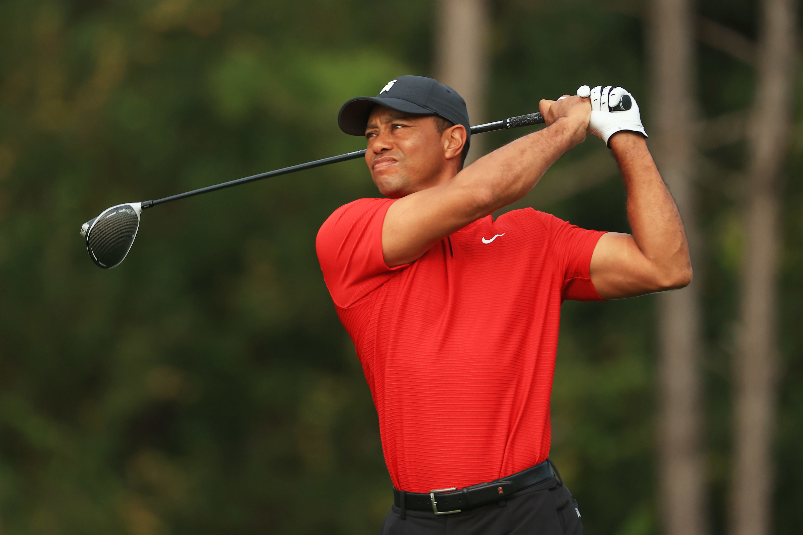

El golf se trata de lo bien que aceptas, respondes y puntúas con tus fallos mucho más de lo que es un juego de tus golpes perfectos

El golf es un deporte cuyo objetivo es introducir una pequeña pelota en una serie de hoyos distribuidos por el campo de juego en el menor número posible de golpes, empleando para golpear la bola un conjunto de palos de diferentes características. Es uno de los deportes más populares del mundo y ofrece numerosos beneficios, ya que permite ejercitar el sistema cardiovascular, tiene un efecto anti-estrés y produce un sentimiento de paz y bienestar.
Mi golfista favorito es...
TIGER WOODS
Tiger Woods es un famoso golfista profesional estadounidense nacido el 30 de diciembre de 1975 en Cypress, California. Desde una edad temprana, mostró un talento excepcional para el golf y ganó numerosos campeonatos amateur, incluyendo tres títulos consecutivos del Campeonato Amateur de Estados Unidos. En 1996, Woods se convirtió en profesional y rápidamente dejó una marca indeleble en el mundo del golf. Ganó su primer torneo importante, el Masters de Augusta, en 1997, estableciendo numerosos récords en el proceso. Dominó el golf desde finales de los años 90 hasta principios de los 2000, pasando un récord de 281 semanas como el golfista número 1 del mundo. A lo largo de su carrera, enfrentó lesiones y desafíos personales, pero logró un regreso notable al ganar el Masters de Augusta en 2019 después de una década sin victorias importantes. Su legado trasciende su éxito en el golf, ya que también ha tenido un impacto significativo en la popularidad del deporte y en la ruptura de barreras raciales en el golf. Tiger Woods es considerado uno de los golfistas más grandes de todos los tiempos y una figura icónica en el mundo del deporte.
Algunos de sus triunfos:
- Masters de Augusta: 5 (1997, 2001, 2002, 2005, 2019)
- Abierto de los Estados Unidos: 3 (2000, 2002, 2008)
- Abierto Británico: 3 (2000, 2005, 2006)
- Campeonato de la PGA: 4 (1999, 2000, 2006, 2007)